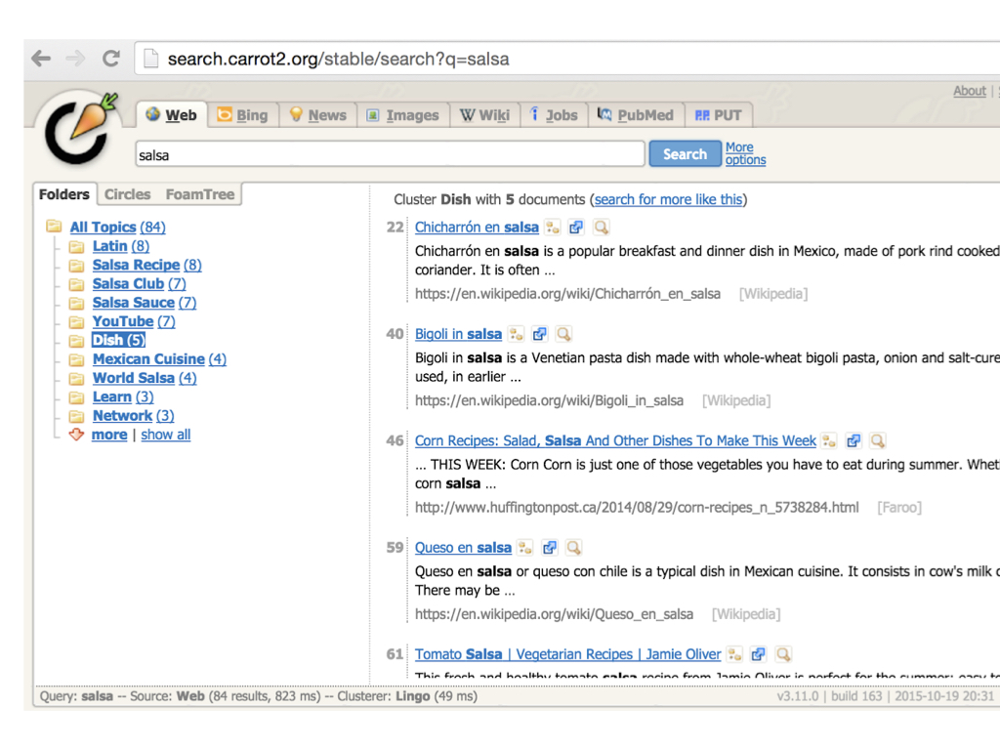

Evaluation and Refinement of Clustered Search Results with the Crowd
Authors
Amy X. Zhang - MIT CSAIL, intern at SIR group at Google AIJilin Chen, Wei Chai, Jinjun Xu, Lichan Hong, Ed Chi - Google AI
Abstract
When searching on the web or in an app, results are often returned as lists of hundreds to thousands of items, making it difficult for users to understand or navigate the space of results. Research has demonstrated that using clustering to partition search results into coherent, topical clusters can aid in both exploration and discovery. Yet clusters generated by an algorithm for this purpose are often of poor quality and do not satisfy users. To achieve acceptable clustered search results, experts must manually evaluate and refine the clustered results for each search query, a process that does not scale to large numbers of search queries. In this article, we investigate using crowd-based human evaluation to inspect, evaluate, and improve clusters to create high-quality clustered search results at scale. We introduce a workflow that begins by using a collection of well-known clustering algorithms to produce a set of clustered search results for a given query. Then, we use crowd workers to holistically assess the quality of each clustered search result to find the best one. Finally, the workflow has the crowd spot and fix problems in the best result to produce a final output. We evaluate this workflow on 120 top search queries from the Google Play Store, some of whom have clustered search results as a result of evaluations and refinements by experts. Our evaluations demonstrate that the workflow is effective at reproducing the evaluation of expert judges and also improves clusters in a way that agrees with experts and crowds alike.
Presentation
This talk was given by me as an invited talk at ACM IUI 2019 in LA.
Today I'm going to be talking about search results.
This is the Google Play store, which I'll be talking a lot about today, with a search for "cats".
And this big mess of returned apps is pretty typical of what you would see on most search engines today.
Here's another example on Netflix of searching "comedy".
What you get back is this basically big list of content with no organization of the items.
There's 90s tv shows next to standup specials next to indie movies.
And this hodgepodge can be difficult for users to navigate or make sense of.
One proposed way to improve the user experience is to have clustered search results.
Particularly on mobile, this is a nice way to break up results into distinct categories.
And indeed researchers have demonstrated the benefit of having more structured
search results for these more exploratory searches (queries like "comedy" as opposed to "the big sick").
They add more visual cues, they make exploration easier, so now you can discover interesting categories
you didn't consider and you can ignore clusters you don't care about.
Just as an aside - notice how old these papers are. They're all a decade or two decades old!
Just as an aside - notice how old these papers are. They're all a decade or two decades old!
But despite these ideas being around for decades, almost no real world search result page does clustered search results today.
The closest is if you go to the home page of some sites like Netflix.
But here, these clusters are not dynamically generated based on a search query so they're a lot easier to fine-tune.
And that is part of the reason why we just don't see clustered search results in production
search engines today, despite their benefits.
The problem is that the raw output of clustering algorithms often have a lot of problems.
And it takes a good deal of mostly manual work to make sure those clusters are up to par, and this just doesn't scale.

Here's an example of a older search engine that just shows raw clustered search results from an algorithm.
And you can see that it manages to separate salsa the dance from salsa the food.
But there's still a ton of incoherent and overly general clusters like "Youtube" or "learn"
as well as overlapping clusters like "salsa recipe" and "dish".
So I think you get a sense of why we want clustered search results but we can't just put that raw output directly into the hands of users.
Now I'm going to talk about how a clustered search result in a production environment would normally be produced today.
And I'm focusing on observations within a Google Play Store team of engineers and product managers tasked
with introducing clustered search results for a number of queries.
And the way the team worked was that basically, it was a very expert driven approach going back and forth between these people.
The software engineers would implement different clustering algorithms and run them on queries and tweak the parameters.
They would also calculate some of these well known automated metrics of quality like the Silhouette score that
try to get at coherence within clusters or distinctness across clusters, but there was also a lot of manual inspection of the clusters.
And the product team would help with manual inspection as well, like helping to find the best one. And then doing more manual steps to fix small issues and give each cluster a name before pushing that one clustered search result to production.
And the product team would help with manual inspection as well, like helping to find the best one. And then doing more manual steps to fix small issues and give each cluster a name before pushing that one clustered search result to production.
The team found out over time that there wasn't really a single algorithm that
worked well across queries. And no one automatic metric encapsulated quality well either.
And so a lot of that evaluation and refinement of the search results had to be manual, leading to all these issues with scaling.
And so a lot of that evaluation and refinement of the search results had to be manual, leading to all these issues with scaling.
So now I'm going to describe a new workflow that we called Refinery,
that replaces the expert-led aspects of cluster evaluation and refinement with crowdsourcing.

For instance, the engineers still need to be the ones to
tweak algorithms but instead of them inspecting raw clusters manually, the crowd could maybe take over that step.
And instead of product teams manually inspecting and refining the final clustered search result, the crowd could maybe do that instead too.
And instead of product teams manually inspecting and refining the final clustered search result, the crowd could maybe do that instead too.
So now I'm going to dive in to each step of the crowd workflow,
and show you the templates we created for each of these steps as well as the
experiments we ran to validate the crowd output at each step.
Ok so the first stage is evaluation. Basically, given a bunch of
different clustered search results of a particular query,
we want the crowd to be able to distinguish the best one.
The way the crowd template looks is like this.
Since we wanted to optimize for scale, we elected to create tasks evaluating
an entire clustered search result instead of tasks looking at item-to-cluster pairs.
Crowd workers are shown the query as well as basically a summary of the clustered search result, which tries to mimic how it would look in production. You see the major apps in each cluster and the top keywords associated. And users can hover over to learn more about each app. We asked users to rate each individual cluster before rating the entire clustered search result so they inspect each cluster.
Crowd workers are shown the query as well as basically a summary of the clustered search result, which tries to mimic how it would look in production. You see the major apps in each cluster and the top keywords associated. And users can hover over to learn more about each app. We asked users to rate each individual cluster before rating the entire clustered search result so they inspect each cluster.
We did an evaluation of the crowd evaluation. We took 120 queries that were
exploratory in nature and high volume, and had 4 algorithms each emphasizing
different things. And we computed clustered search results for each query.
Then we had 50 MTurk workers used our template to rate each clustered search
result, and we took an average to get a crowd rating.
We also had 2 experts from the Google team rate all the search results for 60 randomly selected queries.
Here's a summary of our main findings.
One interesting things is that agreement between the two experts was only fair,
showing how difficult and subjective this task can be even for experts.
We also found that the crowd agrees with experts about as often as experts agree with each other. And they also do better when experts do agree, in the clear cut cases. So the crowd annotations are overall providing a good signal.
However, we needed to gather lots of crowd raters to get to that quality level, around 40, though in actuality we dropped about half of the 40, because some spent very little time on the task so maybe you actually need closer to 20 if you do more to pre-train or pre-screen, which we didn't really do.
We also found that the crowd agrees with experts about as often as experts agree with each other. And they also do better when experts do agree, in the clear cut cases. So the crowd annotations are overall providing a good signal.
However, we needed to gather lots of crowd raters to get to that quality level, around 40, though in actuality we dropped about half of the 40, because some spent very little time on the task so maybe you actually need closer to 20 if you do more to pre-train or pre-screen, which we didn't really do.
There were some other things that we tried that didn't work out.
We attempted something like a side-by-side template where you can compare two clustered search results.
But overall, this didn't work well. It turned out there's just too much information and and people tended to just pick the search result with more clusters.
Now moving on to stage 2 of the workflow, we look at how, given an existing
clustered search result, the crowd can refine that search result to improve it.
And the two main actions we look at are merging two clusters that are overlapping
or conceptually similar. And deleting incoherent or irrelevant clusters.
Here's an example of what that would look like for merging.
Given the query "animal", you have a bunch of different potential categories of apps -
you've got zoo animal apps, pet apps, action/hunting apps, puzzles, and these two clusters -
one is education/learning and one is child.
And you can see the specific apps themselves are pretty similar.
So in this case the crowd select that those two clusters merge together.
Here's the interface for merging two clusters.
We actually had the crowd workers rate the quality of the clusters before suggesting potential merges to get them to inspect the clusters one by one. And they can suggest no merges if they want.
To combined workers' results, we just counted up which merge suggestions were highest and set a threshold.
We did a very similar thing for the template for deleting clusters.
We made merging and deleting two separate tasks mostly to simplify the tasks as much as possible.
So we also did an evaluation of this stage. We took the same 120 queries from the last stage, took the best clustered search result from those evaluations and then fed the result through both merge and delete tasks with 20 crowd workers each.
From the 120 queries, 47 had clusters that 5+ workers wanted to merge or delete.
And to evaluate we had two experts again go through and rate the actions that the crowd suggested.
We also did a crowd evaluation of the crowd refinement where we reused the template from the 1st step to ask the crowd to rate the before and after, again randomizing order.
We had better agreement between experts for this task. And overall experts approved of the crowd actions.
From the crowd evaluation, we saw the crowd rated the after as better 83% of the time.
And even in the cases where the rating for after was worse, the difference was small.
So basically this step helped the clusters either get better or stay about the same in quality.
Ok, now the clustered search result has been cleaned up.
The last thing we need to do is to give each of the clusters
titles that would work in production.
So coming up with good titles is not that easy. To make this last step easier on ourselves,
we took a short cut, which was to make using of the topic keywords associated with each cluster already.
I didn't really explain this earlier but the way we get clusters is - apps are associated with keywords.
These come from the app developer, the app description, and user reviews.
Then for a search result, we actually cluster all the topic keywords from the apps returned,
not the apps themselves (because apps go stale quickly). So for each cluster, we actually
have a set of keywords already associated with that cluster.
Given that then, we developed a really simple crowd interface where the crowd workers go through
each cluster and select the one or two keywords that together, best describes the
cluster and makes it distinct from the others.
This is actually pretty similar to what we saw experts doing, though of course they also had
the ability to completely rewrite a cluster if they felt the keywords weren't great.
We did a evaluation of this step as well, where we had 20 workers add titles from the results from the last step.
Then two experts went through to rate 60 randomly selected queries from the 120.
Overall experts were in agreement most of the time, and also mostly approved of the title suggestions.
Now that I've gone through each step of the process and evaluations of each step,
I'll describe a final evaluation of the entire workflow as a whole.
With those 120 queries, we should be able to compare the final crowd powered clustered search result
with clustered search results that had already gone through that expert led process I described at the beginning.
Out of the 120 queries we experimented with, 57 of them had already gone through the expert pipeline.
We had two experts independently rate the two search results for these 57 queries and also discuss which was better or worse and why.
I just want to go through a couple examples to give you a qualitative sense of this comparison.
In a lot of cases, we saw a final output from the crowd that had a pretty high quality in comparison to expert-driven clusters.
Here we have "trivia", and the crowd and expert versions are pretty similar except that the crowd one has split up "guessing games" into
categories of "film", "logo", and "music".
Here's another one where the resulting clusters categories turned out to be pretty similar. For the query "zoo", we have
simulation games, educational games, and puzzles on both sides.
Occasionally, we had some cases where the crowd result actually did better than the expert one.
When we looked at these cases, we found it was typically because the crowd search result had more clusters than the expert one
and the new clusters were coherent and also distinct from what was already there.
This query is "relaxing music", and both sides have meditation, nature, and classical, but the crowd
one also has insomnia, health, and lullaby.
Here's a summary of our findings. The average rated quality approached that of expert refined clusters.
Qualitatively, the expert results overall had better titles. In the cases where the crowd did well, it was in finding more clusters that were still distinct.
And overall the crowd workflow led to drastic improvements over the quality of the raw algorithms.
Really quickly, I want to mention the relative costs. Overall, we found that the Refinery workflow in its current state is cheaper than the expert approach but not like an order of magnitude cheaper. But we didn't really make any efforts to pre-screen or pre-train workers so a lot of the redundancy we had in crowd workers especially in that Evaluate step I think could be pared down to reduce costs.
So the approach I've outlined makes it possible to scale to thousands but not millions of queries.
But there's definitely a diminishing cost as you go down that long tail of queries.
There might also be a way to reuse refined clusters by looking for equivalent queries for instance.
Another interesting thing is there were some things that experts could do that weren't in our crowd templates. For instance, the ability to move or delete topic keywords or individual apps from clusters. I think this might be possible in a more dynamic interface where crowd workers could see the effects of their actions and try things out.
And finally, the crowd refinements don't currently but they could potentially feed back into the ontology or item labels, in case there's an incorrectly labeled app. This would help future runs of the algorithms.
Another interesting thing is there were some things that experts could do that weren't in our crowd templates. For instance, the ability to move or delete topic keywords or individual apps from clusters. I think this might be possible in a more dynamic interface where crowd workers could see the effects of their actions and try things out.
And finally, the crowd refinements don't currently but they could potentially feed back into the ontology or item labels, in case there's an incorrectly labeled app. This would help future runs of the algorithms.
I think the interesting research questions this work brings up is the interplay between experts, crowds, and algorithms,
where each has some respective strengths.
Algorithms are great at doing a first pass and finding things that we might not consider.
Then experts can understand marketing or business needs, they understand how the algorithm works,
what went wrong, and they have a sense of what will happen if they make big changes to the algorithm.
Meanwhile the crowd is good at common sense judgements at scale and collectively
spotting small mistakes and making smaller adjustments.
And with that I will close! Thank you and thanks again to the folks at Google for supporting this research.